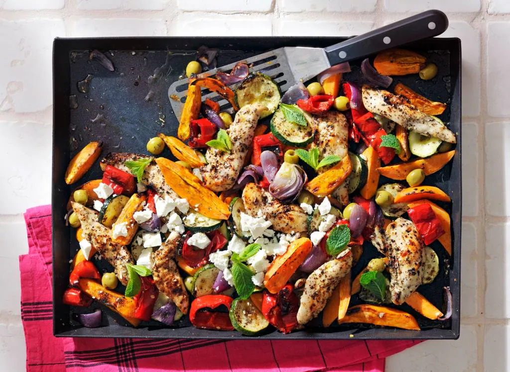

Traybake

Description
This delicious and easy dish is one you'll gladly return to. The traybake contains sweet potato, zucchini, Moroccan flavoured chicken and is topped off with olives, feta cheese and some mint to piece it all together.
This recipe only requires you to prepare the chicken, cut the vegetables and prepare them together in a preheated oven.
Ingredients
- 3 pieces of garlic
- 5 table spoons of mild olive oil
- 2 table spoons of za'atar spice
- 400 gr free range chicken tenderloin
- 1 kg sweet potato
- 1 zucchini
- 2 sweet red bell ppeppers
- 2 red onions
- 2 table spoons of pitless green olives
- 4 gr fresh mint
- 100 gr feta cheese
You'll also need some baking paper and a baking sheet.
Steps
- Preheat the oven to 200 °C. Finely chop the garlic. Mix ⅗ of the oil with the honey, garlic, za'atar and pepper. Mix the marinade through the chicken tenderloins. Let the chicken marinate for a while while you cut the vegetables.
- Peel the sweet potatoes and cut lengthwise into about 2-inch segments. Cut the zucchini into slices. Remove the seeds and stem end of the peppers and cut the flesh into 2-inch rings. Cut the red onions into wedges.
- Spread the sweet potato, zucchini, bell bell pepper and red onion on a baking sheet lined with baking paper. Drizzle with the remaining oil, sprinkle with salt and pepper. Spread the marinated chicken and olives on top. Bake about 25 min. in the oven until the chicken is done and the vegetables are crisp. Remove the leaves from the mint sprigs.
- Remove the plate from the oven. Crumble the white cheese on top and scatter the mint leaves on top.
Home